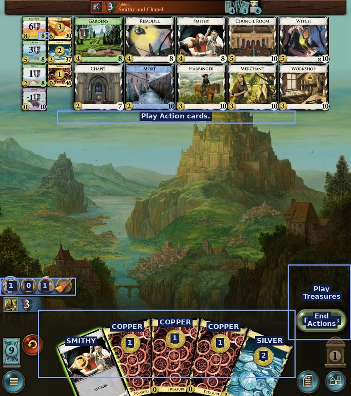
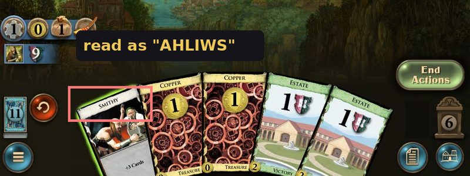

How it works
An evolved strategy plays a game it was never built for, through the same screen and mouse a person uses. This page goes through every part in order. The film How it works shows the same steps on recorded footage.
Contents
- The problem
- Three parts in a loop
- Eyes 1: the screenshot
- Eyes 2: reading text
- The kingdom from the save file
- Brain 1: the evolved strategy
- Brain 2: buying with the strategy's own code
- Brain 3: playing actions
- Cards it never learned
- Hands: the patient click
- Timing: wait for a still screen
- Memory between turns
- Score screen and rematch
- Speed
- The files
The problem
The strategies come from dominion-v1: a genetic algorithm that
evolves Dominion strategies over millions of games in a simulator. Since 14 November that simulator is the shared
dominion-engine, rebuilt to Steam's rules (Python, with an identical C
version for speed). Each released model is a folder with its evolved strategy.json. Which model plays a game
depends on the kingdom: see The setup.
The Steam game is a different program: a closed Windows game (by Temple Gates) that runs on Linux through Proton. It has no bot interface, no mods, and no file that shows your hand. So the autopilot does what a person does: look, decide, click.
Three parts in a loop
grab.py, vision.pybrain.pyclick.pyThe loop in pilot.py handles one prompt per pass. The prompt is the sentence under the supply that says
what the game wants: Play Action cards., Play Treasure cards. or Buy a card. Each kind has its own
handler. A prompt it doesn't know is saved as a screenshot, and the autopilot waits.
Eyes 1: the screenshot
On a Wayland desktop, one program normally can't look at another one's window. But Proton runs the game as an X11 window
inside XWayland, and inside that layer the old X11 calls still work. grab.py walks the X11 window tree,
finds the window titled Dominion (927 × 1048 pixels here), and copies its pixels with XGetImage.
No permission dialog appears. One screenshot takes about 50 ms (measured, 20 grabs).
Eyes 2: reading text

The text reader is RapidOCR (ONNX models, CPU only). It never reads the whole screen, only these regions (coordinates for a 927 × 1048 window, scaled if the window is bigger or smaller):
| Region | Box (x0, y0, x1, y1) | What comes out |
|---|---|---|
| Prompt line | 150, 292, 780, 326 | Play Action cards. etc. |
| Hand | 100, 820, 780, 1000 | Card-name banners, e.g. COPPER, SMITHY, with their positions (= where to click) |
| Counters | 0, 735, 200, 782 | Three digits, left to right: actions, coins, buys |
| Buttons | 760, 700, 927, 900 | "Play Treasures", "End Actions", "End Buys" (two-line labels are joined) |
| Kingdom names | 190, 40, 870, 200 | The 10 kingdom piles and where they are, once per game |
| Province count | 100, 84, 128, 104 | Provinces left (the strategy's phase depends on it) |
Fixing small reading mistakes. Every name is matched to this game's card list: exact match first, else the most similar name if it is at least 80% similar. ESTATE sometimes comes out as STATE, COUNCIL ROOM as COUNCILROOM. The base piles (Province, Gold, …) sit at fixed positions and aren't read.

AHLIWS, so the autopilot ended its action phase without playing Smithy (three times in two games). The
reader has an orientation check that turns text it thinks is upside down, and it guessed wrong on that card. Hand cards
are never upside down, so the check is off for the hand. A word that still matches no card is read once more on its own
(as it is, then turned 180°), and if the game asks for actions but no action card was read, it reads again before
giving up.The kingdom from the save file
The ten kingdom cards aren't recognised from the screen at all. Dominion saves each local game as
TempleGates/Dominion/gamelocal_*.xml inside the Proton prefix
(steamapps/compatdata/1131620/pfx/drive_c/users/steamuser/AppData/Roaming/). The newest file is the
current game. It is plain XML:
<players><playerType>AI</playerType><playerName>Very Easy AI</playerName></players>
<config>
<seed>-907500586</seed>
<setupData>-e base</setupData>
<kingdomData>chapel, moat, harbinger, merchant, workshop, gardens, remodel, smithy, council_room, witch</kingdomData>
</config>The seed names the game's memory file. The piles are still found on screen by their names, because their positions change from game to game.
Brain 1: the evolved strategy
strategy.json is a small genome of ordered lists and numbers. The game is split into three phases:
| Phase | When (this model) | Buy list, in order (stops at PASS) |
|---|---|---|
| Early | turns 1–2 | Smithy, Duchy, Silver, Merchant, PASS |
| Middle | until 2 Provinces are left, or turn 16 | Province, Gold, Silver, Village, Festival, Market, PASS |
| Late | to the end | Province, Duchy, Moneylender, Estate, Laboratory, Smithy, Silver, Gold, Mine, Copper, … (no PASS until the very end) |
It also holds the action order (non-terminals Merchant > Market > Village > Festival > Laboratory, then terminals Throne Room > Smithy > Moneylender > Chapel > Mine), Chapel trash lists per phase, the Throne Room target order, buy targets (maximum copies, e.g. at most 1 Village), and a terminal-slack number.
Brain 2: buying with the model's own code
The autopilot doesn't re-implement the buy rules. On the first Buy a card. prompt of a turn it:
- reads coins and buys from the counters, and the Province count;
- sends the model a protocol question (
buy) with an observation: turn, Provinces left, kingdom, piles seen empty, every card it owns, hand, coins and buys; - the model's
policyrebuilds that position as a game of the shared engine and asks its agent the engine's own BUY decision, once per buy: the same agent code that played every game in training; - takes the answer (e.g.
["Gold", "Silver"]) as the plan, and clicks the piles one by one.
So the buys on Steam are exactly the buys the strategy makes in its simulator, with its two hidden rules: buy targets (stop at N copies) and terminal density (refuse a terminal action card when the deck has no spare actions for it, given the slack).
Empty piles (found by a recording, see Lessons): if a buy click leaves coins and buys unchanged, the click bought nothing, so that pile is empty. It is reported as empty and the model is asked again.
Brain 3: playing actions
When the prompt asks for actions, it reads the hand and the actions counter, and plays the first card of the non-terminal list that is in hand, else the first terminal. A Moneylender without a Copper in hand, and a Throne Room without another action, are skipped. After every play it takes a new screenshot, because the hand has changed. With no card worth playing it presses End Actions. Treasures are always played with the Play Treasures button.
Prompts for trashing (Chapel) and for discarding down to a number (e.g. against Militia) have handlers that use the model's Chapel lists and its engine agent's Militia discard order. Militia discards came up 21 times in the campaign.
Cards it never learned
A model only buys cards on its own buy lists, and those come from the kingdom it was trained on. k1-steam, the model behind every Steam game so far, was trained on Chapel, Festival, Laboratory, Market, Merchant, Mine, Moneylender, Smithy, Throne Room and Village. Every other kingdom card is logged as untrained and never bought, so the autopilot never needs to know how to play it. In the campaign that was about 6 of the 10 cards in a typical game.
The shared engine now knows all 26 base-set cards, so new models can learn any of them, and the model selector picks the model whose cards were dealt. For nine of the new cards (Artisan, Cellar, Harbinger, Library, Poacher, Remodel, Sentry, Vassal, Workshop) the autopilot can't answer Steam's question yet when you play them, so models are never told to buy those.
Hands: the patient click
click.py sends pointer events with the XTEST extension, which XWayland passes on to the game. The first
version clicked instantly, and the game ignored clicks on cards. It only accepts a click after the pointer has
hovered on the target for a moment. So each click glides the last few pixels (3 steps), rests 0.35 s, presses,
holds 0.15 s and releases. Hand cards are clicked 55 px below their name banner, on the card body, because a hovered
card lifts up.
Timing: wait for a still screen
At the start of a turn the game animates: the hand slides in, and the opponent's last card is still shown in the middle. Clicks during that are lost. Two rules fixed it:
- before reading, take screenshots 0.35 s apart until two in a row differ by less than 0.5 grey levels on average (up to ten tries);
- in the action phase, wait (up to three tries) until the actions counter shows at least 1.
Memory between turns
A new turn is counted when an action or treasure prompt follows a buy prompt. After every turn the autopilot writes
autopilot/run_<seed>.json: turn, Provinces left, cards owned (starting with 7 Copper and 3 Estate,
plus buys, minus trashing), and piles seen empty. Restarting it in the same game reloads that file. Cards gained from
attacks (a Witch's Curse) aren't seen, so the owned count can be a little off. It only feeds the buy-target and
terminal-density rules.
Score screen and rematch
When the game ends, the prompt line is empty and a Score dialog appears. The autopilot looks for its Rematch
button, reads the victory points from the two shields, logs the result, and saves the screenshot to
autopilot/results/. (The opponent's shield is often unreadable for the OCR. The saved screenshot always shows the
real score.) With --games N it presses Rematch, waits for the new game's save file, reads the new kingdom,
and starts again.
Speed
Measured on this machine (8 CPU cores), from the timings the recorder logs for every read:
| Step | Time | Conditions |
|---|---|---|
| Screenshot of the window | ≈ 50 ms | 20 grabs, while recording |
| OCR, prompt line | 2.7 s | median over game 3 (286 reads), with the narration for these films rendering on the same machine |
| OCR, hand | 3.4 s | |
| OCR, counters | 3.5 s | |
| OCR, buttons | 1.0 s | |
| OCR, Province count | 0.5 s | |
| OCR, one region | 6–9 s | all 8 cores busy with another job (first game) |
| A whole turn (both players) | ≈ 25 s | game 3: 39 turns in 16.6 minutes |
The text reader is the slow part, and it is CPU-only. No idle-machine timing was recorded yet.
The files
| File | Job |
|---|---|
autopilot/pilot.py | The loop, prompt handlers, memory, rematch, command-line options |
autopilot/vision.py | Regions, OCR, name matching, the upside-down re-read |
autopilot/brain.py | Tracks the game and asks the model through dominion-v1's policy protocol; picks the model with the selector |
autopilot/ui.py, campaign.py | Control panel (kingdom, difficulty, model, Play) and the campaign runner behind the Stats tab |
autopilot/grab.py, click.py | Screenshot and click on the XWayland window |
autopilot/recorder.py | --record: frames (4/s) and an event log, on a second X connection |
video/ | Film scripts and builders (every frame from a recording) |
dominion-v1/ | Submodule: the GA trainer, its released models and the protocol; brings the shared engine as its own submodule dominion-v1/engine/ |
models/ | Extra model folders (plug-ins) next to dominion-v1's own |